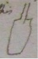

Thomas Beddoes to James Watt, 17 August 1794
Dear Sir
When I returned from your neighbourhood, I found an execution in the house I had taken <& lived in>. My immediate landlord was in debt to his landlord & others, so they seized his furniture. It being inconvenient to reside in an unfurnished house, I was obliged to shift house: this has prevented me from using your apparatus. I unpacked it but yesterday. I will send the drawings as you direct: is there any objection to have them engraved as Mr Cavendish’s apparatus in the Phil. Trans. – that is, in mere outlines? However I doubt not but the sale of the pamphlet will save me or nearly so. I do not wish to gain a penny. by it. So if the plates had best be shaded, I wd rather pay a little more to have them done well. My pamphlet will be of the same size & print as my last, viz, ‘Letters from Dr Withering’ Dr [xxxx] It will be printed <by the time> as soon as the engraving is finished; I will read over your description twice accurately with the drawings to be certain of ye references & tomorrow send them to you, keeping the description –
To day I write to a friend to send you Exeter Manganese 20 or 30 lb I hope you will receive if this week. Moisten it, when in powder, with oil of vitriol before you put it into the retort; though perhaps water will do – moistened however it must be – I imagine the pieces of earthen ware wd be sufficiently heated to decompound the extricated nitrous acid witht melting the iron. A patient of mine breathed air from nitre heated in an iron <(cast iron)> matrass of this [sketch of vessel]  shape – he procured it for himself repeatedly & used it – he was supposed 8 months ago to be in the act of dying of a spasmodic asthma. That he was not worse, but much better though he exceeded my directions as to strength & qty is certain. He himself imputes the prolongation of his existence & his present comfortable state to oxygene air but I do not choose to draw hasty conclusions or make rash assertions. Dr Ingenhousz in a late letter mentions 3 persons who breathed several thousand cubic inches of air from nitre heated in vessels of Bohemian glass without inconvenience & with a remarkable increase of appetite – one asthmatic person, he says, was much relieved by it – I think however you will find the vitriolic acid & Exeter manganese <to answer well> I suppose from what I have read that you will not find sp. of nitre to yield air enough to be an economical method. Mr Geijer got between 7 & 800 cubic inches from a pound of common sp. of nitre – I forget the particular result of Dr Priestley’s exps
You will soon, I hope, recieve the last corrected copy of my proposals. Mr Boulton mentioned an objection to any thing like an hospital. Certainly a number of sick in one room is very objectionable; but I hope if this scheme takes place there will never be above two in one room; & I think unless you have a few patients under your eye, you cannot fully ascertain the power of airs – particularly the effects of an atmosphere slightly modified but inspired for a long time –
I am Dear Sir
Yours with much esteem
Thomas Beddoes
Augt 17– 1794
Mall, Clifton, Bristol
Address: James Watt Esq / Heathfield / Birmingham
Endorsement: Dr Beddoes / Augt 17th 1794
MS: LoB MS 3219/4/28/10